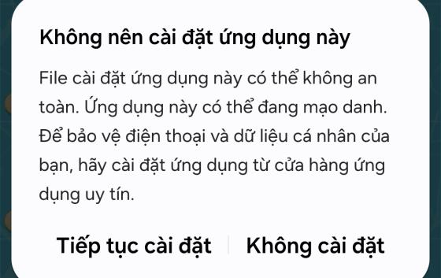
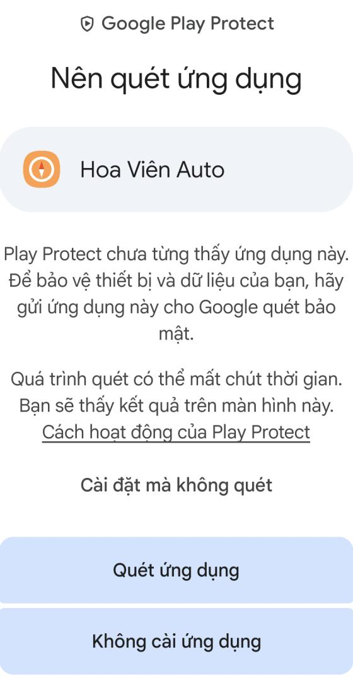
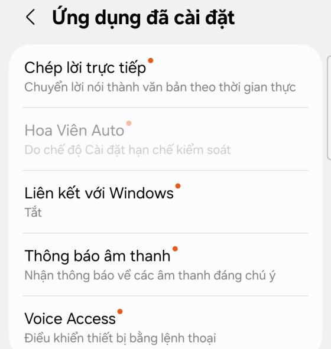
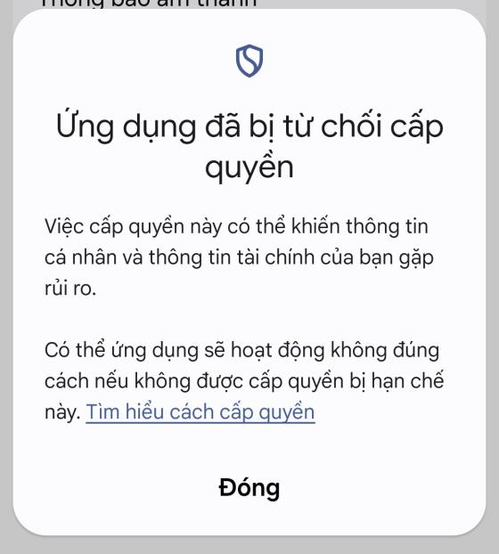
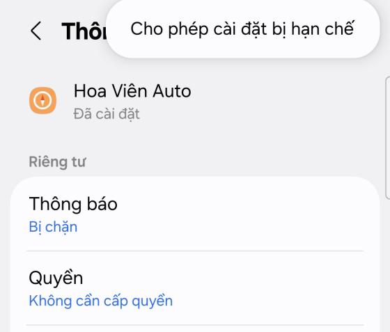
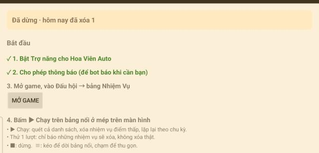
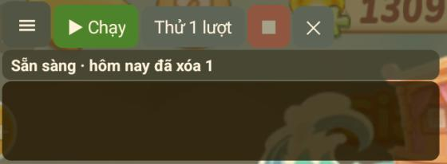

<title>Cài Hoa Viên Auto</title>
<link rel="preconnect" href="https://fonts.googleapis.com">
<link rel="preconnect" href="https://fonts.gstatic.com" crossorigin>
<link rel="stylesheet" href="https://fonts.googleapis.com/css2?family=Baloo+2:wght@600;700&family=Be+Vietnam+Pro:wght@400;500;600&display=swap">
<style>
  /* Bố cục: một cột đọc trên điện thoại, mỗi bước là một hàng (số bước + chữ + ảnh chụp màn hình). */
  :root {
    --bg: #f3f6f2;
    --surface: #ffffff;
    --fg: #1d2a22;
    --muted: #56665c;
    --line: #d8e0d6;
    --go: #2e7d32;          /* nút ▶ Chạy trên bảng nổi */
    --leaf: #e9f3e6;
    --petal: #c2571a;       /* cam của huy hiệu số thứ tự trong game */
    --petal-soft: #fbe9dd;
    --warn: #8a5a00;
    --warn-soft: #fff4d6;
    --display: "Baloo 2", "Be Vietnam Pro", system-ui, sans-serif;
    --body: "Be Vietnam Pro", system-ui, -apple-system, "Segoe UI", sans-serif;
  }
  @media (prefers-color-scheme: dark) {
    :root:not([data-theme="light"]) {
      --bg: #111612; --surface: #19201b; --fg: #e5ece6; --muted: #9aaa9f; --line: #2b352e;
      --go: #74c178; --leaf: #1d2a20; --petal: #f09a63; --petal-soft: #2c211a;
      --warn: #f2c46b; --warn-soft: #2b2414; color-scheme: dark;
    }
  }
  :root[data-theme="dark"] {
    --bg: #111612; --surface: #19201b; --fg: #e5ece6; --muted: #9aaa9f; --line: #2b352e;
    --go: #74c178; --leaf: #1d2a20; --petal: #f09a63; --petal-soft: #2c211a;
    --warn: #f2c46b; --warn-soft: #2b2414; color-scheme: dark;
  }

  body { background: var(--bg); color: var(--fg); font-family: var(--body); font-size: 16px; line-height: 1.6; }
  .page { max-width: 680px; margin: 0 auto; padding-inline: 18px; padding-block: 28px 56px; display: grid; gap: 36px; }
  h1, h2 { font-family: var(--display); line-height: 1.15; text-wrap: balance; margin: 0; }
  h1 { font-size: 2.2rem; }
  h2 { font-size: 1.45rem; }
  p { margin: 0; }
  b { font-weight: 600; }

  header { display: grid; gap: 10px; }
  .chips { display: flex; flex-wrap: wrap; gap: 8px; }
  .chip { font-size: .8rem; font-weight: 600; letter-spacing: .02em; padding: 2px 10px; border-radius: 999px; background: var(--leaf); color: var(--go); }
  .chip.orange { background: var(--petal-soft); color: var(--petal); }
  .lead { color: var(--muted); max-width: 60ch; }

  .need { background: var(--surface); border: 1px solid var(--line); border-radius: 14px; padding: 16px 18px; display: grid; gap: 8px; }
  .need ul { margin: 0; padding-left: 1.2em; display: grid; gap: 4px; }

  section { display: grid; gap: 18px; }
  .section-head { display: grid; gap: 4px; }
  .section-head p { color: var(--muted); }

  ol.steps { list-style: none; margin: 0; padding: 0; display: grid; gap: 22px; counter-reset: step; }
  ol.steps > li { counter-increment: step; display: grid; grid-template-columns: 2.1rem 1fr; gap: 12px; align-items: start; }
  ol.steps > li::before {
    content: counter(step); font-family: var(--display); font-weight: 700; font-size: 1.05rem;
    width: 2.1rem; height: 2.1rem; border-radius: 50%; display: grid; place-items: center;
    background: var(--petal-soft); color: var(--petal); border: 2px solid var(--petal);
  }
  .step { min-width: 0; display: grid; gap: 10px; }
  .step .note { color: var(--muted); font-size: .92rem; }

  .ui { font-weight: 600; background: var(--leaf); color: var(--go); padding: 0 6px; border-radius: 6px; white-space: nowrap; }
  .path { font-weight: 500; }

  figure { margin: 0; display: grid; gap: 6px; justify-items: start; }
  figure img { width: 100%; max-width: 320px; border-radius: 12px; border: 1px solid var(--line); display: block; }
  figure.wide img { max-width: 420px; }
  figcaption { font-size: .85rem; color: var(--muted); }

  .callout { background: var(--warn-soft); color: var(--fg); border-left: 4px solid var(--warn); border-radius: 10px; padding: 12px 14px; display: grid; gap: 6px; }
  .callout b { color: var(--warn); }

  .buttons { display: grid; gap: 8px; }
  .buttons div { display: grid; grid-template-columns: 6.5rem 1fr; gap: 10px; align-items: baseline; }
  .buttons span.k { font-weight: 600; color: var(--go); }

  ul.tips { margin: 0; padding-left: 1.2em; display: grid; gap: 8px; }
  footer { color: var(--muted); font-size: .88rem; border-top: 1px solid var(--line); padding-top: 16px; display: grid; gap: 6px; }

  @media (max-width: 420px) {
    h1 { font-size: 1.85rem; }
    .buttons div { grid-template-columns: 1fr; gap: 0; }
  }
</style>

<main class="page">
  <header>
    <div class="chips"><span class="chip">Bản 1.0</span><span class="chip orange">Android 11 trở lên</span></div>
    <h1>Hoa Viên Auto</h1>
    <p class="lead">App tự xóa các nhiệm vụ Đấu hội có điểm thấp trong game Thế Giới Hoa Viên Của Tôi, để chỉ còn lại nhiệm vụ điểm cao. Làm theo từng bước dưới đây, mất khoảng 5 phút. Ảnh minh họa chụp trên Samsung Galaxy A54 (Android 15); máy khác chữ có thể hơi khác.</p>
  </header>

  <div class="need">
    <b>Cần có trước khi cài</b>
    <ul>
      <li>Điện thoại hoặc máy tính bảng Android 11 trở lên đã cài game.</li>
      <li>Tài khoản game có nút <span class="ui">Xóa nhiệm vụ</span> trong bảng Nhiệm Vụ của Đấu hội. Nếu chỉ có nút Nhận nhiệm vụ thì app không làm gì được.</li>
      <li>File <b>HoaVienAuto-1.0.apk</b> (người gửi app chuyển qua Zalo).</li>
    </ul>
  </div>

  <section>
    <div class="section-head">
      <h2>Cài file APK</h2>
      <p>App không có trên Google Play nên máy sẽ cảnh báo vài lần. Đó là cảnh báo chung cho mọi app cài từ file.</p>
    </div>
    <ol class="steps">
      <li><div class="step">
        <p>Mở file <b>HoaVienAuto-1.0.apk</b> trong Zalo (hoặc thư mục Tải về), bấm <span class="ui">Cài đặt</span>. Nếu máy hỏi cho phép cài app từ nguồn này, bật cho phép rồi quay lại.</p>
      </div></li>
      <li><div class="step">
        <p>Samsung báo <b>“Không nên cài đặt ứng dụng này”</b>: bấm <span class="ui">Tiếp tục cài đặt</span>.</p>
        <figure><figcaption>Bấm Tiếp tục cài đặt.</figcaption></figure>
      </div></li>
      <li><div class="step">
        <p>Google Play Protect báo <b>“Nên quét ứng dụng”</b>: bấm <span class="ui">Chi tiết khác</span> rồi <span class="ui">Cài đặt mà không quét</span>. Chọn Quét ứng dụng cũng được, chỉ lâu hơn.</p>
        <figure><figcaption>Dòng Cài đặt mà không quét hiện ra sau khi bấm Chi tiết khác.</figcaption></figure>
      </div></li>
      <li><div class="step">
        <p>Xác nhận bằng vân tay hoặc mã PIN nếu máy hỏi. Cài xong, mở app <b>Hoa Viên Auto</b>.</p>
      </div></li>
    </ol>
  </section>

  <section>
    <div class="section-head">
      <h2>Bật Trợ năng</h2>
      <p>App dùng Trợ năng để chụp màn hình game và chạm, kéo thay bạn. Android 13 trở lên chặn quyền này với app cài từ file, nên lần đầu sẽ phải mở khóa một bước.</p>
    </div>
    <ol class="steps">
      <li><div class="step">
        <p>Trong app, bấm <span class="ui">Mở cài đặt Trợ năng</span>. Máy mở <span class="path">Cài đặt → Hỗ trợ</span>. Chọn <span class="ui">Ứng dụng đã cài đặt</span> → <span class="ui">Hoa Viên Auto</span>.</p>
        <figure><figcaption>Lần đầu, mục Hoa Viên Auto bị mờ và ghi “Do chế độ Cài đặt hạn chế kiểm soát”. Vẫn bấm vào nó.</figcaption></figure>
      </div></li>
      <li><div class="step">
        <p>Máy báo <b>“Ứng dụng đã bị từ chối cấp quyền”</b>: bấm <span class="ui">Đóng</span>. Bước này bắt buộc, vì nút mở khóa ở bước sau chỉ hiện sau khi bị báo như vậy.</p>
        <figure><figcaption>Bấm Đóng.</figcaption></figure>
      </div></li>
      <li><div class="step">
        <p>Quay lại app Hoa Viên Auto, bấm <span class="ui">Mở thông tin ứng dụng</span>. Bấm dấu <b>⋮</b> ở góc trên phải, chọn <span class="ui">Cho phép cài đặt bị hạn chế</span>, rồi xác nhận bằng vân tay hoặc mã PIN.</p>
        <figure><figcaption>Nếu không thấy dấu ⋮, làm lại bước 1 và 2 rồi mở lại trang này.</figcaption></figure>
      </div></li>
      <li><div class="step">
        <p>Làm lại bước 1: lần này mục Hoa Viên Auto không còn mờ. Bật công tắc và bấm <span class="ui">Cho phép</span>. Một bảng nút nhỏ hiện ở mép trên màn hình là đã xong.</p>
      </div></li>
      <li><div class="step">
        <p>Trong app, bấm <span class="ui">Cho phép thông báo</span> để app báo cho bạn khi cần (game bị thoát, pin yếu…).</p>
        <figure class="wide"><figcaption>Bước nào xong sẽ có dấu ✓ màu xanh.</figcaption></figure>
      </div></li>
    </ol>
  </section>

  <section>
    <div class="section-head">
      <h2>Chạy bot</h2>
      <p>Mở game, vào <span class="path">Đấu hội → bảng Nhiệm Vụ</span> (nút Mở game trong app mở thẳng game). Dùng bảng nút nhỏ ở mép trên màn hình:</p>
    </div>
    <figure class="wide"><figcaption>Bảng nổi nằm trên tiêu đề game, không che bảng Nhiệm Vụ.</figcaption></figure>
    <div class="buttons">
      <div><span class="k">Thử 1 lượt</span><p>Quét một lượt và chỉ báo những nhiệm vụ sẽ xóa, không xóa thật. Nên bấm cái này trước tiên để xem app đọc đúng không.</p></div>
      <div><span class="k">▶ Chạy</span><p>Quét cả danh sách, xóa nhiệm vụ có điểm ≤ 12, rồi tự lặp lại mỗi 15 phút. Đổi hai con số này trong mục Cài đặt của app.</p></div>
      <div><span class="k">■</span><p>Dừng. Bấm ■ thì app không tự chạy lại nữa.</p></div>
      <div><span class="k">≡</span><p>Kéo để dời bảng nổi; chạm để thu gọn hoặc mở rộng.</p></div>
      <div><span class="k">✕</span><p>Đóng bảng nổi khi không dùng (bot đang chạy cũng dừng theo). Muốn hiện lại thì mở app Hoa Viên Auto, bấm <span class="ui">Hiện bảng nổi</span>.</p></div>
    </div>
  </section>

  <section>
    <div class="section-head"><h2>Khi để bot chạy lâu</h2></div>
    <ul class="tips">
      <li><b>Cắm sạc.</b> Bảng nổi giữ màn hình luôn sáng nên tốn pin; pin dưới 20% mà không sạc thì app sẽ báo.</li>
      <li><b>Để yên game ở bảng Nhiệm Vụ.</b> App không tự mở lại game. Nếu game bị thoát hoặc chuyển màn hình, app gửi thông báo và tự chạy tiếp khi bạn mở lại bảng Nhiệm Vụ.</li>
      <li><b>Đừng che cạnh trên của máy</b> (để úp, bỏ túi). Tính năng Chống chạm nhầm của Samsung sẽ làm tối màn hình và chặn mọi thao tác.</li>
      <li>Màn hình khóa của <b>Game Booster</b> (tối màn hình, có biểu tượng ổ khóa) thì app tự mở, bạn không cần làm gì.</li>
    </ul>
    <div class="callout">
      <p><b>Cập nhật bản mới:</b> mở file APK mới và cài đè lên như bước cài đặt. Không cần gỡ app cũ, không phải bật lại Trợ năng.</p>
      <p><b>Gặp lỗi:</b> mở app, bấm <span class="ui">Sao chép nhật ký</span>, dán gửi cho người đã gửi app cho bạn.</p>
    </div>
  </section>

  <footer>
    <p>App chỉ chụp màn hình và chạm trong game; không đọc nội dung ứng dụng khác và không gửi dữ liệu ra ngoài.</p>
    <p>Tự động hóa có thể vi phạm điều khoản của game. Bạn tự chịu trách nhiệm khi dùng.</p>
  </footer>
</main>
